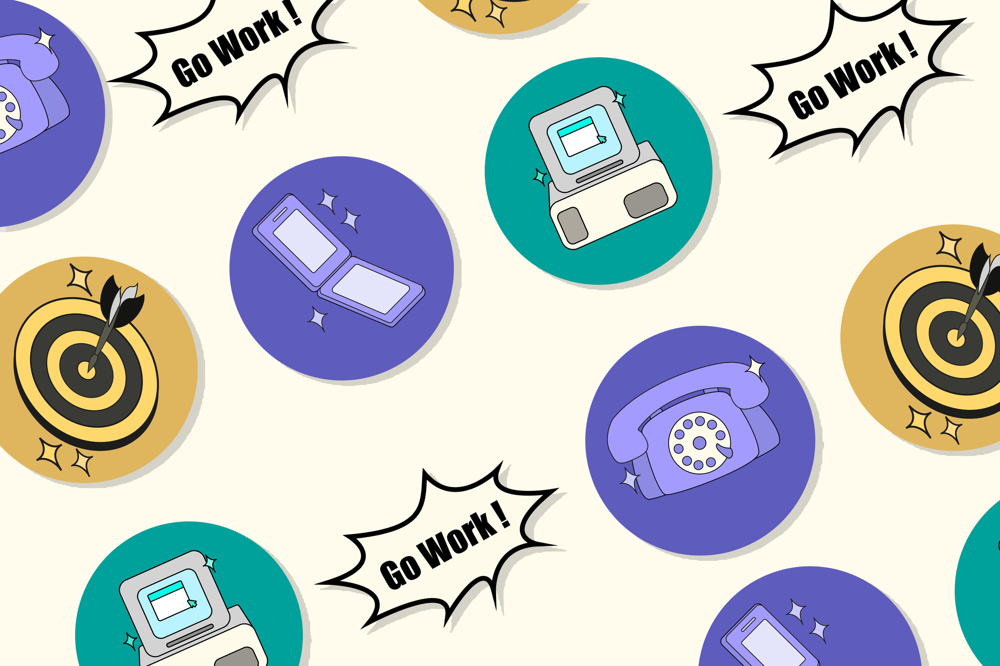

Des icônes !
J'ai pu réaliser des icones pour un client qui propose des services en informatique.

J’ai créé cette série d’icônes entièrement avec Illustrator, en m’inspirant d’objets au style vintage.
Chaque icône a été dessinée de A à Z, avec une attention particulière portée à la simplification des formes l’objectif étant de conserver la lisibilité et l’impact visuel essentiels à une icône efficace.


Ce projet m’a donné l’occasion de créer des icônes au style vintage avec un effet "stickers" visuel ! J’ai suivi la direction artistique du client avec attention, en respectant les codes couleurs propres à chaque section. Pour les icônes violettes, j’ai proposé deux variations afin d’enrichir les possibilités et affiner la direction finale.